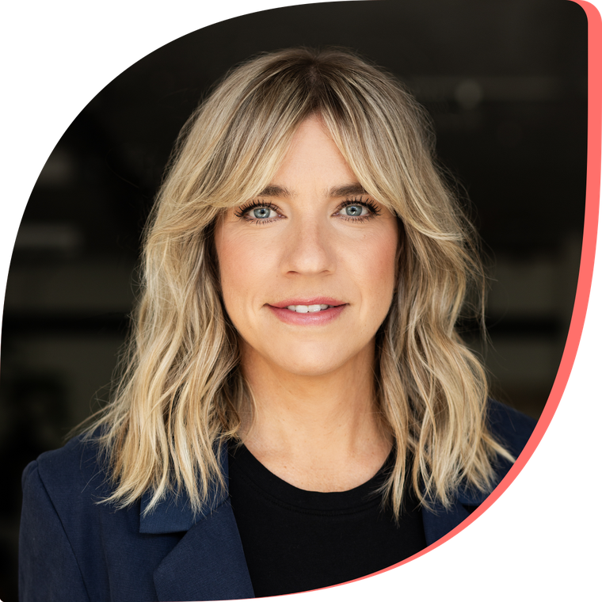

« Je bâtis ce que j’aurais voulu trouver
lors de ma propre transition parentale. »
Deux sujets : la transition parentale, et l’accomplissement personnel.
Mon récit, seule sur scène, en ouverture ou en clôture de journée.
Mon expertise sur la transition parentale et l’accomplissement personnel, dans un format de discussion.
En entreprise, sur la conciliation travail-famille, en particulier pour les femmes en transition parentale.
dans le milieu des affaires
dans le milieu de la conférence
à former des femmes en leadership
À l’Institut de Leadership, j’ai cofondé le programme Femmes Leaders. Dix ans à écouter des femmes parler d’ambition en salle et de charge mentale aux pauses.
Je suis certifiée en transition parentale par le Center for Parental Leave Leadership, l’organisme américain fondé par Amy Beacom (Ph. D.).
Je porte le sujet dans les médias québécois depuis 2026.
Prix coup de cœur au Défi OSEntreprendre 2026, volet régional Haute-Yamaska et Brome-Missisquoi
Le parcours que j’ai bâti est animé par des sommités québécoises. Elles interviennent aussi en entreprise.
Dites-moi ce que vous organisez et ce que vous cherchez à faire vivre à votre salle. Je réponds moi-même.